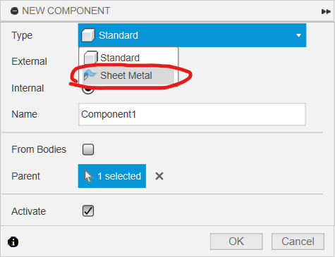

2.3 Walking linkage robot
本節要繪製的，是下圖這一部四足連杆機械人。本節主要學習應用fusion360中的joint功能，應用不同的joint去模擬連杆機械人的效果。

walking robot tutor Drawing v4.pdf
檔案
今次用到的70093L和70093R你應該已經上載了，這步驟可以省去
本次會應用到的檔案(以下為step檔)，下載解壓後，在fusion左邊欄尋找"upload"鍵，就能上載到fuison中應用
useful robotics component step.zip
或者你可以在grabcad.com直接下載fusion360檔案(需要注冊登入)
https://grabcad.com/library/tamiya-70093-3-speed-crank-axle-gearbox-kit-1
https://grabcad.com/library/tamiya-crank-1

STEP 1
開啟新的 component，命名為
base確保旁邊有一個黑色小點，表示激活狀態
這是為了製作底板，請跟隨以下步驟：
用快捷鍵
s搜尋new component開啟新的 component
命名為 "base"
確保旁邊有黑色小點表示激活狀態

接著在xy平面(或水平面)， 開一個新的sketch，繪制如下:


使用
s搜尋change parameter開啟參數列表
定義一個新的參數，名為
thickness，值為3mm使用
e指令，擠出thickness參數的厚度


STEP 2
使用快捷鍵
s指令搜尋insert derive功能將 70093L gearbox 插入衍生到此檔案中
選擇 70093L 的 component
按右鍵，在選單中選擇
rigid group
❗記得要用insert derive功能, 不要直接拖拉gearbox入去, 否則是不能修改的


確保小黑點在這個70093L gearbox旁。
用
e將齒輪箱的軸適當地修短(或增長, 如果有需要)
再用快捷鍵
j把齒輪箱組合到底板


再次使用快捷鍵
s指令搜尋insert derive功能
將另一個 70093 gearbox 插入衍生到此檔案中，確保小黑點在新派入的 70093 旁邊
使用 快捷鍵
e擠出 指令，適當修剪齒輪箱的長軸
使用快捷鍵
j指令，將齒輪箱組合到底板上
❗️記得要用derive功能來插入衍生，不要用copy & paste，否則修改齒輪箱時，左右兩邊會同步喔!!!!

STEP 3
將小黑點移回最上層
開啟一個新的 sheet metal component，命名為
L support，選擇一個材料和厚度開啟
new component時有選項是standard或Sheet Metal
確認 sheet metal component 的圖示與普通 component 不同
確保旁邊有一個小黑點，表示激活狀態
在底板上方使用快捷鍵
s搜尋new sketch，在底板表面創建一個新的草圖為洞的中心點繪製中心線
繪製一個寬度為 10mm 的長方形
使用中點或對稱約束，確保正方形相對於中心線對稱
💡提示: 可以點擊 component 左側的眼睛圖示，隱藏 component 以方便操作



在 sheet metal 頁面中，點擊
edit rule"圖示，在所選材料旁邊會出現一支筆的圖示，點擊進去即可修改屬性，例如厚度、摺疊時預留的延伸長度等等在 sheet metal 頁面中，點擊
Flange圖示，或使用快捷鍵s搜尋Flange選擇剛才繪製的方形，製作一個厚度為 2mm 的金屬薄片
❗️請注意，製作金屬薄片時需要使用 Flange指令，請勿使用 e extrude 指令


使用
Flange指令，點擊金屬片的邊緣，即可自動出現bending功能Bending 的高度和位置(
Bend Position)可以分別設定為inside、outside和center三種，決定高度和摺疊位置的計算方式不同，可以嘗試看看有什麼不同
設定凸出高度
Height Datum為16mm，Bend Position為inside內側計起重複以上步驟，製作另一側高度也為
16mm的鋁片(如下圖)


保旁
L support邊有一個小黑點，表示激活狀態使用 快捷鍵
s搜尋指令new sketch，在凸起的鋁板表面開一個新的草圖(如下圖)將其中一個齒輪箱顯示出來
使用快捷鍵
p投影長軸的圓這一步是為了確保開出來的孔跟長軸同一個高度
在鋁板上劃一條中線和一個直徑為 3mm 的圓形
使用
constraints中的第一個圖示horizontal and vertical，確保 3mm 圓形的高度與長軸同高


使用 快捷鍵
e使用extrude指令，選擇剛才所劃 3mm 圓形，到extent type使用to object，將圓孔穿透到鋁板的另一面最後使用快捷鍵
f使用fillet指令，修剪圓角，半徑選擇3mm 即可


將小黑點移回最外層
使用快捷鍵
j使用joint指令，將鋁板組合到底板上

STEP 4
確保小黑點在最外層
使用快捷鍵
s指令搜尋insert derive，插入tamiya crank曲柄的 step 檔或 f3d 檔插入後，將小黑點移動到曲柄的旁邊，並激活它
在曲柄表面使用
new sketch創建一個新的草圖投影並繪製一條線，如下圖所示
💡提示: 可以使用 component 旁的小眼睛圖示，適當地顯示和隱藏 component，方便操作


確保小黑點在
tamiya crank曲柄的旁邊使用快捷鍵
eextrude指令，將多餘的曲柄部分剪除，只留下最近的一個孔將小黑點移回最外層
使用快捷鍵
jjoint指令，將曲柄組合到齒輪箱的長軸上
❗如果使用的是 f3d Fusion 360 檔案，由於齒輪箱內部可以旋轉，因此可以使用 "rigid" 聯結方式
❗如果使用的是 step 檔案，聯結時需要到 "motion" 頁面，選擇旋轉聯結的類型為 revolving joint


STEP 5
確保小黑點在最上層
使用
Ctrl-C/Ctrl-V指令，將tamiya crank複製一份使用快捷鍵
jjoint指令，將複製的曲柄組合到另一邊的齒輪箱長軸上記得方向要與另一邊相差 180 度，如果左邊是向後，這邊則要向前方
💡如果零件完全相同，可直接複製/貼上；如果零件相似但需要獨立修改，則需使用衍派(
insert derive)功能💡同樣地，如果使用的是 step 檔案的 70093 齒輪箱，joint的類型應為 revolving joint

STEP 6
確保小黑點在最上層
使用
new component指令，創建一個名為legs"的新組件，用於裝配左半邊的所有腳和連桿確保小黑點在
legs旁邊，再次使用new component指令，創建一個名為leg1的新組件
❗接下來所有的腳和連桿，都必須確保位於 legs"組件的下方，否則在複製時，所有聯結的關係都會散開，需要重新組合


STEP 7
確保小黑點在
leg1旁邊先隱藏除
leg1外的所有組件使用快捷鍵
s，尋找new sketch指令，在原點的 XZ 平面上創建一個新的草圖根據下圖所示的尺寸繪製草圖
在繪製時，可以使用快捷鍵
s尋找指令change parameter，將連桿的尺寸設置為變數，之後只需修改該變數即可更新所有相關尺寸


使用快捷鍵
eextrude指令，擠出 "thickness" 的厚度再使用 快捷鍵
ffillet指令，添加圓角，半徑約3mm


STEP 8
接下來，褪回小黑點在
legs的旁邊使用 快捷鍵
s搜尋new component，創建一個名為linkage1的新組件先隱藏除
linkage1外的所有組件確保小黑點在
linkage1旁邊，並在 XZ 平面上創建一個新的草圖繪製一個連桿，使用
change parameter指令設置一個名為L3的變數來定義長度，設置值為72mm如果上一步已一次過設定好，這一步可以省卻
最後使用 快捷鍵
eextrude指令擠出thickness"的厚度


STEP 9
接下來開始複製和組裝左腳：
首先將所有零件顯示出來，方便操作。
使用快捷鍵
jjoint指令，將linkage1組件組裝到鋁片上。兩個 joint 的接口保留
1mm的距離，如果是實物裝配時，可以使用 1mm 的鐵墊片將其隔開，確保可以旋轉。
大約將接口的角度旋轉 25 度，方便後續操作。
前往
motion頁面，選擇revolving joint作為聯結的類型。
完成後，可以發現這個 joint 的符號會出現在最上層。
即使在啟用
legs組件時（小黑點在旁邊），這個 joint 也會在legs之外，因此在複製legs時不會跟著複製。


STEP 10
使用快捷鍵
j將leg1組件組裝到曲柄上偏移 4mm
這個偏移量不一定需要是 4mm，因為之後需要在
motion頁面進行設置
在
motion頁面，選擇cylindrical joint這種 joint 有兩個自由度，一個是旋轉，另一個是沿著旋轉軸移動，因此上面選擇的 4mm 偏移量只是參考，沒有實際限制
跟上面的
revolving joint一樣，即使在啟用legs組件時，這個 joint 也不會在legs底下，因為曲柄不在legs底下。


STEP 11
確保小黑點在
legs組件旁邊使用快捷鍵
jjoint將leg1組件組合到linkage1"上joint 接觸面距離為 1mm，跟之前一樣，如果在實際組裝時，可以使用 1mm 的墊片隔離
在
motion頁面上選擇revolving joint
完成後，確認這個 joint 在
legs組件之下，這樣在複製時才會跟著被複製
💡 記住四連桿組裝的秘訣是：在三個 joint 中，有 2 個 revolving joint 和 1 個 cylindrical joint，次序可以隨意，這樣就不用計算偏移量和厚度。


STEP 12
確保小黑點繼續在
legs組件旁邊使用
Ctrl+C/Ctrl+V將leg1和linkage1複製一份，複製成leg1:2和linkage1:2，如下圖所示確保兩隻腳和兩條連桿都在同一個
legs組件之下

STEP 13
圖1:
確保小黑點在
legs旁邊
使用 joint 將
leg1:2組件組合到linkage1上，偏移1mm
在
motion頁面上選擇revolving joint
同樣地，圖2：
將
linkage1:2組件連接到leg1:2上
在
motion頁面上選擇revolving joint，偏移1mm
最後，圖3：
將
linkage1:2的另一端連接到leg1上
在
motion頁面上選擇cylindrical joint
這次可以不用偏移，因為使用
cylindrical joint會自動調整間隔，以適應前面兩個偏移量


STEP 14
好的，左腳部分完成了。
請試著轉動齒輪箱，看看腳是否跟著動
試著調整
leg和linkage的偏移量，由1mm改為0.5mm（或任何數值），看看修改後是否會出現錯誤警告如果按照步驟進行，調整參數應該不會出現錯誤

STEP 15
將小黑點移回最上層
使用
Ctrl+C/Ctrl+V將整個legs組件（即左腳）複製一份，複製成legs1:2可以將複製的組件移開一點，以方便操作
❗ Fusion 360 的鏡像功能無法複製 joint，因此如果要完全左右對稱，則需要重新建立所有的 joint

STEP 16
使用 快捷鍵
j將最靠近右側 Tamiya 曲柄的linkage1:1組件組合到曲柄孔上在
motion頁面上選擇revolving joint偏移
1mm


STEP 17
最後將右側的
leg1:1和剩下的鋁支架L support的孔組合在
motion"頁面上選擇cylindrical joint這次可以不用偏移，因為使用
cylindrical joint會自動調整間隔，以適應前面兩個偏移量。

完成
完成之後，
請模擬一下，試著轉動右側的腳，看看是否可以模擬真實機械連桿轉動。
試著修改一下偏移量的數值，看看是否會出現錯誤。
PDF 文件包含 Phase 1 和 Phase 2 的尺寸，請使用
Change Parameter更改一下參數尺寸，看看整個設計是否會立即修改